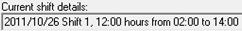

Please use the following sequence when adding shift patterns:
Entries that contain a Special date or Day of month value must always be specified first.
Special date entries must use the format “yyyy/mm/dd” e.g. 2010/04/04. An example of a “special date” is a public holiday which falls on a different day every year e.g. Easter Monday.
Day of month entries must use the format “mm/dd”. An example of a “day of month” is a public holiday which falls on the same day every year e.g. New Years day.
Note1: Entries containing a Special date cannot contain a Day of month value too.
Note2: Entries containing a Special date or Day of month value force (disable) their Day of week value.
Tip: Use the DEL key to delete unneeded Special date or Day of month field entries
The last entries should be the default shift patterns that ONLY contains a Day of week value and NO Special date or Day of month values.
This screenshot exemplifies the required order of entries and provides the following shift patterns:
For the 1st of January of any year.
For the 25th of December for any year.
ONLY on the 4th of April 2010
For ALL Saturdays and Sundays
For ALL normal weekdays
Notice how the shift patterns that do NOT contain a Special date or Day of month column are at the END of this list.
The Shift agent caters for a maximum of 6 shifts per day. If you need less than 6 shifts, then specify the starting time of the last applicable shift for the unneeded shifts.
For instance, if only 3 shifts are used, then specify the starting time of shift 3 as the starting times of shifts 4, 5 and 6.
This screenshot shows the following shift time configurations:
The first has TWO shifts one starting at 2 AM and the other at 2 PM.
The second has THREE shifts, which start at 2 AM, 10 AM and 6 PM
Notice how the unneeded shifts ALWAYS specify the starting times of the last applicable shift.
SQL connection string: If specified, the shifts are added to the Adr_Grouping_Details table as the shifts occur in real time, which is used by Adroit SCADA Intelligence.
Note:
If you specify global, the Global OLE DB connection string of the Agent Server is used, which is specified in the Adroit Config Editor.
Typically, you can launch this tool from the Desktop shortcut.
Select the Agent Server Configuration Welcome menu item.
Select the Advanced Agent Server Configuration option.
At the bottom of the dialog, the Global OLE DB connection field is available for you to specify this connection string.
The Current shift details field displays the current day, the current shift number, the current shift duration and then the starting and ending times of the current shift. Example:

Tip: If this does not reflect recent configuration changes then click the Update and then the Refresh buttons and it should display correctly.

 Example:
Example: